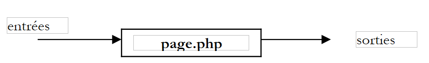

2. نهج تطوير MVC للويب/PHP
نقترح هنا نهجًا لتطوير تطبيقات الويب/PHP التي تتبع بنية MVC. ويهدف هذا النهج فقط إلى توفير نقطة انطلاق. وعلى القارئ تكييفه وفقًا لتفضيلاته واحتياجاته الخاصة.
- سنبدأ بتحديد جميع طرق عرض التطبيق. وهي عبارة عن صفحات الويب التي تظهر للمستخدم. وسنتبنى منظور المستخدم عند تصميم طرق العرض. هناك ثلاثة أنواع من طرق العرض:
- نموذج الإدخال، المصمم لجمع المعلومات من المستخدم. وعادةً ما يتضمن زرًا لإرسال المعلومات المدخلة إلى الخادم.
- صفحة الاستجابة، التي تخدم فقط لتوفير المعلومات للمستخدم. غالبًا ما تتضمن رابطًا واحدًا أو أكثر يسمح للمستخدم بمواصلة استخدام التطبيق على صفحة أخرى.
- الصفحة المختلطة: أرسلت وحدة التحكم إلى العميل صفحة تحتوي على معلومات قامت بإنشائها. سيستخدم العميل هذه الصفحة نفسها لتزويد وحدة التحكم بمعلومات جديدة من المستخدم.
- ستنشئ كل طريقة عرض صفحة PHP. بالنسبة لكل منها:
- سنقوم بتصميم تخطيط الصفحة
- سنحدد أي أجزاء منها ديناميكية:
- المعلومات المخصصة للمستخدم والتي يجب أن يوفرها وحدة التحكم كمعلمات لعرض PHP. الحل البسيط هو كما يلي:
- تضع وحدة التحكم المعلومات التي تريد توفيرها لعرض V في قاموس $dResponse
- يعرض وحدة التحكم العرض V. إذا كان هذا يتوافق مع الملف المصدر V.php، يتم تحقيق هذا العرض ببساطة عن طريق عبارة include V.php.
- التضمين السابق هو تضمين كود داخل وحدة التحكم. يمكن الوصول إلى القاموس $dReponse الذي تم ملؤه بواسطة وحدة التحكم مباشرةً من خلال الكود في V.php.
- بيانات الإدخال التي يجب إرسالها إلى البرنامج الرئيسي للمعالجة. يجب أن تكون هذه البيانات جزءًا من نموذج HTML (علامة <form>).
- المعلومات المخصصة للمستخدم والتي يجب أن يوفرها وحدة التحكم كمعلمات لعرض PHP. الحل البسيط هو كما يلي:
- يمكننا تخطيط الإدخال/الإخراج لكل عرض
 |
- المدخلات هي البيانات التي يجب أن يوفرها وحدة التحكم لصفحة PHP
- المخرجات هي البيانات التي يجب أن توفرها صفحة PHP لوحدة التحكم في التطبيق. وهي جزء من نموذج HTML، وستقوم وحدة التحكم باستردادها باستخدام عملية مثل $_GET["param"] (طريقة GET) أو $_POST["param"] (طريقة POST).
- في كثير من الأحيان، لا تكون الصفحة النهائية المرسلة إلى العميل عرضًا واحدًا بل تجميعًا من العروض. على سبيل المثال، قد تبدو الصفحة المرسلة إلى المستخدم كما يلي:
 |
يمكن أن تكون المنطقة 1 لافتة رأس الصفحة، والمنطقة 2 لافتة قائمة، والمنطقة 3 منطقة محتوى. في PHP، يمكن تحقيق هذا التكوين باستخدام كود HTML/PHP التالي:
<table>
<tr>
<td><?php include zone1.php ?></td>
</tr>
<tr>
<td><?php include zone2.php ?></td>
<td><?php include zone3.php ?></td>
</tr>
</table>
يمكنك جعل هذا الكود ديناميكيًا بكتابة:
<table>
<tr>
<td><?php include $dReponse['urlZone1'] ?></td>
</tr>
<tr>
<td><?php include $dReponse['urlZone2'] ?></td>
<td><?php include $dReponse['urlZone3'] ?></td>
</tr>
</table>
يمكن أن يكون تكوين العرض هذا هو التنسيق الوحيد للاستجابة المرسلة إلى المستخدم. في هذه الحالة، يجب أن تحدد كل استجابة للعميل عناوين URL الثلاثة التي سيتم تحميلها في المناطق الثلاث قبل عرض صفحة الاستجابة. يمكننا تعميم هذا المثال بتخيل وجود عدة قوالب محتملة لصفحة الاستجابة. لذلك، يجب أن تقوم الاستجابة للعميل بما يلي:
- تحديد القالب الذي سيتم استخدامه
- تحديد العناصر التي سيتم تضمينها فيه
- طلب عرض القالب
- سنكتب كود PHP/HTML لكل قالب استجابة. عادةً ما يكون الكود بسيطًا. يمكن أن يكون الكود الخاص بالمثال أعلاه كما يلي:
<?php
// initializations for testing without a controller
...
?>
<html>
<head>
<title><?php echo $dReponse['titre'] ?></title>
<link type="text/css" href="<?php echo $dReponse['style']['url'] ?>" rel="stylesheet" />
</head>
<body>
<table>
<tr>
<td><?php include $dReponse['urlZone1'] ?></td>
</tr>
<tr>
<td><?php include $dReponse['urlZone2'] ?></td>
<td><?php include $dReponse['urlZone3'] ?></td>
</tr>
</table>
<body>
</html>
كلما أمكن، سنستخدم ورقة أنماط حتى نتمكن من تغيير "شكل" الاستجابة دون الحاجة إلى تعديل كود PHP/HTML.
- سنكتب كود PHP/HTML لكل عرض أساسي. وسيكون في الغالب بالشكل التالي:
<?php
// a few initializations may be necessary, particularly in the debugging phase
...
?>
<balise>
...
// here we'll try to minimize the php code
</balise>
لاحظ أن العرض الأساسي مدمج داخل قالب. يتم دمج كود HTML الخاص به في كود القالب. في أغلب الأحيان، يتضمن القالب بالفعل العلامات <html> و<head> و<body>. لذلك، من النادر العثور على هذه العلامات في العرض الأساسي.
- يمكننا المضي قدمًا في اختبار قوالب الاستجابة المختلفة وطرق العرض الأساسية
- يتم اختبار كل قالب استجابة. إذا كان اسم القالب modele1.php، فسنطلب عنوان URL http://localhost/chemin/modele1.php باستخدام متصفح. يتوقع القالب قيمًا من وحدة التحكم. هنا، نستدعيه مباشرةً بدلاً من الاستدعاء عبر وحدة التحكم. لن يتلقى القالب المعلمات المتوقعة. لتمكين الاختبار مع ذلك، سنقوم يدويًا بتهيئة المعلمات المتوقعة في صفحة PHP الخاصة بالقالب باستخدام الثوابت.
- يتم اختبار كل نموذج، وكذلك جميع طرق العرض الأساسية. هذا هو الوقت المناسب أيضًا لتطوير العناصر الأولى من أوراق الأنماط المستخدمة.
- بعد ذلك، نكتب منطق التطبيق:
- تتولى وحدة التحكم، أو البرنامج الرئيسي، عمومًا عدة إجراءات. يجب تحديد الإجراء المطلوب تنفيذه في الطلبات التي تتلقاها. يمكن القيام بذلك باستخدام معلمة طلب، سنسميها هنا `action`:
- إذا كان الطلب قادمًا من نموذج (<form>)، يمكن أن تكون هذه المعلمة معلمة نموذج مخفية:
<form ... action="/C/main.php" method="post" ...>
<input type="hidden" name="action" value="uneAction">
...
</form>
- (تابع)
- إذا كان الطلب قادمًا من رابط، فيمكنك تكوينه على النحو التالي:
يمكن أن تبدأ وحدة التحكم بقراءة قيمة هذه المعلمة، ثم تفوض معالجة الطلب إلى وحدة نمطية مسؤولة عن التعامل مع هذا النوع من الطلبات. هنا، افترضنا أن كل شيء يتم التحكم فيه بواسطة برنامج نصي واحد يُسمى main.php. إذا احتاج التطبيق إلى معالجة الإجراءات action1 و action2 و... و actionx، فيمكنك إنشاء دالة لكل إجراء داخل وحدة التحكم. إذا كان هناك العديد من الإجراءات، فقد يؤدي ذلك إلى وحدة تحكم "ضخمة". بدلاً من ذلك، يمكن إنشاء نصوص برمجية action1.php و action2.php و... و actionx.php مسؤولة عن معالجة كل إجراء. سيقوم وحدة التحكم المكلفة بمعالجة الإجراء actionx ببساطة بتحميل الكود من النص البرمجي المقابل باستخدام تعليمات مثل include "actionx.php". تتمثل ميزة هذه الطريقة في أنك تعمل خارج كود وحدة التحكم. وبالتالي، يمكن لكل عضو في فريق التطوير العمل على النص البرمجي الذي يعالج الإجراء actionx بشكل مستقل نسبيًا. كما أن تضمين الكود من البرنامج النصي actionx.php في كود وحدة التحكم أثناء وقت التشغيل له ميزة تقليل كمية الكود التي يتم تحميلها في الذاكرة. يتم تحميل الكود الخاص بمعالجة الإجراء الحالي فقط. يعني تضمين هذا الكود أن متغيرات وحدة التحكم قد تتعارض مع تلك الموجودة في البرنامج النصي للإجراء. سنرى أنه يمكننا قصر متغيرات وحدة التحكم على عدد قليل منها محددة جيدًا، والتي يجب تجنبها بعد ذلك في البرامج النصية.
- سنسعى بشكل منهجي إلى عزل منطق الأعمال أو الكود الخاص بالوصول إلى البيانات الدائمة في وحدات منفصلة. تعمل وحدة التحكم كقائد فريق يتلقى الطلبات من عملائه (عملاء الويب) ويقوم بتنفيذها بواسطة الكيانات الأكثر ملاءمة (وحدات الأعمال). عند كتابة وحدة التحكم، سنحدد واجهة وحدات الأعمال التي سيتم كتابتها. ينطبق هذا إذا كانت هناك حاجة إلى إنشاء وحدات الأعمال هذه. إذا كانت موجودة بالفعل، فستتكيف وحدة التحكم مع واجهة هذه الوحدات الموجودة.
- سنكتب الهيكل الأساسي للوحدات النمطية للأعمال التي تتطلبها وحدة التحكم. على سبيل المثال، إذا كانت وحدة التحكم تستخدم وحدة نمطية `getCodes` التي تُرجع مصفوفة من السلاسل، فيمكننا في البداية كتابة ما يلي ببساطة:
- يمكننا بعد ذلك الانتقال إلى اختبار وحدة التحكم ونصوص PHP المرتبطة بها:
- يتم وضع وحدة التحكم ونصوص الإجراءات والنماذج وطرق العرض والموارد التي يتطلبها التطبيق (الصور، إلخ) في مجلد DC المرتبط بسياق C الخاص بالتطبيق.
- بمجرد الانتهاء من ذلك، يتم اختبار التطبيق وتصحيح الأخطاء الأولية. إذا كان main.php هو وحدة التحكم و C هو سياق التطبيق، فسنطلب عنوان URL http://localhost/C/main.php. في نهاية هذه المرحلة، تصبح بنية التطبيق جاهزة للعمل. قد تكون مرحلة الاختبار هذه صعبة، نظرًا لوجود عدد قليل من أدوات تصحيح الأخطاء المتاحة إذا كنت لا تستخدم بيئات تطوير متقدمة، والتي عادةً ما تكون مدفوعة. يمكنك استخدام عبارات echo "message"، التي تكتب إلى دفق HTML المرسل إلى العميل وبالتالي تظهر على صفحة الويب التي يعرضها المتصفح.
- أخيرًا، نكتب فئات الأعمال التي يتطلبها وحدة التحكم. يتضمن هذا عادةً التطوير القياسي لفئة PHP، والتي عادةً ما تكون مستقلة عن أي تطبيق ويب. سيتم اختبارها أولاً خارج هذه البيئة، باستخدام تطبيق وحدة التحكم، على سبيل المثال. بمجرد كتابة فئة الأعمال، نقوم بدمجها في بنية نشر تطبيق الويب واختبار تكاملها بشكل صحيح. نواصل بهذه الطريقة لكل فئة أعمال.